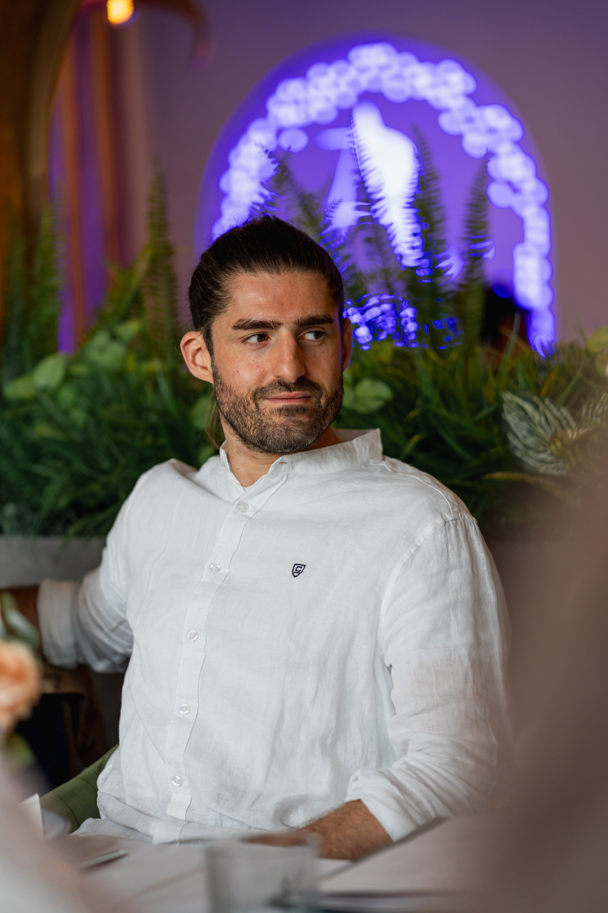

Beyond Design
The Person Behind the Professional
When I'm not crafting user experiences, you'll find me soaring through the skies, riding horses, flying FPV drones, or training Brazilian Jiu-Jitsu. Discover the passions that shape my perspective on life and design.
Who I Am
I'm Ramy Eid, a UX/Product Designer with over 10 years of experience, but that's just the professional side of me.
Beyond the design world, I'm a person driven by adventure, discipline, and continuous learning. My diverse interests - from aviation to martial arts - have taught me valuable lessons about focus, patience, and pushing boundaries.
These experiences don't just stay in their respective domains; they influence how I approach design problems, collaborate with teams, and think about user experiences. Every passion has shaped the designer I am today.

My Passions
Horse Riding
There's something magical about the connection between rider and horse. Horse riding has taught me about trust, communication, and the importance of building strong partnerships - skills that translate directly into how I approach user research and stakeholder collaboration.
General Aviation Pilot
Flying airplanes has given me a unique perspective on systems thinking, risk management, and decision-making under pressure. Every flight is a lesson in attention to detail, safety protocols, and the importance of clear communication - principles I apply to every design project.
FPV Drone Pilot
Flying FPV drones combines technology, skill, and creativity. It's about seeing the world from a different angle and capturing perspectives that others might miss. This mindset helps me think outside the box when solving design challenges and exploring new user experience possibilities.
Brazilian Jiu-Jitsu (Blue Belt)
BJJ has been transformative in teaching me about strategy, adaptability, and continuous improvement. Every training session is a lesson in problem-solving, patience, and the importance of fundamentals. These principles directly influence my design methodology and approach to complex projects.
YouTube Creator - Sandarist
Running my YouTube channel "Sandarist" has taught me about content creation, audience engagement, and storytelling. Understanding how to communicate complex ideas in an engaging way has been invaluable for presenting design concepts and explaining user experience strategies to stakeholders.
My Journey
The Beginning
Started my journey at ENSC Bordeaux studying human factors and cognitive engineering. Worked on the MoTa project at Airbus Group, developing Java applications and AI pathfinding algorithms. This experience ignited my passion for UX design.
Building Foundations
Worked at NiceToMeetYou agency and Sopra Steria Consulting, gaining experience in wireframing, design sprints, and product ownership. Led projects for Domyos, Crédit Mutuel, and international PIM systems.
Corporate Experience
Joined Capgemini Creative Studio and worked with Leroy Merlin/ADEO, focusing on UX research, workshop facilitation, and data analysis. Contributed to the ADEO design system (Mozaic) enrichment.
AI Innovation Era
Leading UX/Product Design for Decathlon Ride app and pioneering AI-powered design methodologies. Founded Expertise Innovation Design to help organizations leverage AI in their design processes.
How My Passions Shape My Design
Precision & Focus
From aviation's attention to detail to BJJ's strategic thinking, I bring precision and focus to every design decision. Every element serves a purpose, every interaction is intentional.
Adaptability
Horse riding and FPV flying have taught me to adapt quickly to changing conditions. In design, this translates to flexible solutions that can evolve with user needs and business requirements.
Partnership & Trust
The trust built between rider and horse, or training partners in BJJ, mirrors the trust needed in design teams and with stakeholders. I prioritize building strong, collaborative relationships.
Ready to Work Together?
My diverse background brings a unique perspective to every project. Let's discuss how my experience in design, combined with my passion for innovation and continuous learning, can help bring your vision to life.